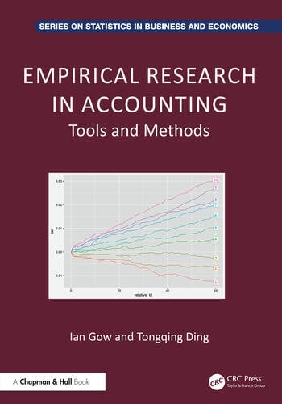

Empirical Research in Accounting
Tools and Methods
序論

本書は、学部上級（「honours」）あるいは博士課程の入門レベルからスタートする財務会計研究の講義を提供している。 この講義の目的は、ほとんどの博士課程の講義と同じように、博士課程の学生がより上級の講義を取るために準備することや、自ら研究をすすめることができるようにすることである。 もう一つの目的は、コンサルティングやファイナンスといった他の領域で有用なスキルをもつ生徒を育てることである。 この2つ目の目的は、メルボルン大学の優秀学生と博士課程のジョイント講義の一部が起源である。 ここで優秀学生(honours students)は、研究を中心とした追加の1年間の学習を完了する学部生である。 優秀学生の一部は博士課程に進むが、ほとんどはコンサルティング、監査、公共サービスなどの業界での仕事を選択する。
本書の特徴
本書の特徴のいくつかは、本書に基づいた講義が、従来の博士課程レベルの講義とは異なる点で区別されることを意味している。
教育的な観点から論文の選択
会計を専攻する博士課程の講義の多くは、学生が自分自身の研究で埋めることができる文献の空白を見つけるのを助けるために、最新の論文に焦点を当てている。 このような講義は本書と補完的なものと考えているが、異なるアプローチを取っている。 会計研究のより基本的な理解を提供することを目指して、この講義で選ばれた論文は、会計研究の現状を確認しようとするのではなく、教育的な目的を重視して選択されている。 場合によっては、古い論文（例：Ball and Brown, 1968）を取り上げることもあるが、他の場合には、中心的なアイデアやアプローチを特徴とする最近の論文を使用している。
データ解析スキルの組み込み
本書を特徴づける2番目の特徴は、ほとんどの博士課程コースとは違って、データ解析スキルに重点を置いていることである。 本書をデータ解析スキルに特化させることも可能であったが、これらのスキルは実際の研究課題に適用することで最もよく学ぶことができると考えている。 逆に、データを取得し、シミュレーションを実行し、研究プロセスの重要な要素により深く関わることができるようになることは、研究に対する理解を深めると考えている。 データ解析とコンピューティングスキルを体系的に講義の各段階に組み込んでいる。 実際には、研究コンピューティングスキルは研究者のツールキットの中心的な部分を占めているが、一般的には博士課程のカリキュラムでは無視されがちである。 一般的な考え方は、研究コンピューティングスキルは他の学生から、研究助手や教員との協力を通じて、などの形で非公式に獲得されるというものである。
博士課程プログラムによっては、このアプローチがある程度は機能するかもしれない。 しかし、多くの博士課程プログラムでは、このような非公式な学習では学生を十分に準備することができない。 例えば、学生が教員との協力が非公式であり、学生がデータ解析を行う際に教員からの指導が限られているかない場合、明確で包括的な指導の機会は限られる。
研究デザインと方法に対する強い重点
会計研究は圧倒的に因果推論を行う実証的な学問であり、そのため、重要な研究トレーニングは研究デザインの問題に焦点を当てるべきである。 本書の第III部では、自然実験、回帰不連続デザイン、操作変数、固定効果など、因果推論について詳しく調べている。 しかし、これらの技術が保証された因果推論の可能性を提供するという一般的な信念には欠陥があることがわかるだろう。 講義全体を通じて、実世界の現象について推論を行うためのより広いツールセットを提供する。 この講義では、カバーする分析を実施するために必要なスキルを学生に提供することを目指している。 会計研究者による統計的および計量経済学的手法の理解は、一貫性や推定量の漸近分散の分析よりも、実際のシミュレーション分析によってより高い可能性で向上すると考えている。 このようなシミュレーションを実行するために必要なデータ解析スキルを組み込むことで、この講義が会計研究者が推定量の特性についてより慎重に考えるためのプラットフォームを提供することを期待している。 本書で行う分析は、本書に記載されているコードを使用して読者が実行できることを前提としている。
前提条件
いくつかのトピックについての事前知識と、特定のコンピューティングリソースへのアクセスを前提としている。 これらの要件を最小限に抑えるよう努めている。
- 会計とビジネスに関する知識。 会計に関しては、入門的な財務会計コースの内容についての理解と、会計を理解するためのビジネスに関する十分な理解を前提としている。
- 統計学と計量経済学の事前学習 統計推論の要素や最小二乗（OLS）回帰についての基本的な知識があると有用である。 第3章から第5章ではこれらの要素についての入門的な資料を提供しているが、これは選択的なものであり、本書を読み進める際にこれらのトピックを復習するために教科書を使用すると役立つかもしれない。
- 学術誌へのアクセス 講義では、学術誌の論文を広範に使用している。 学術機関の教員、研究者、学生であれば、所属する図書館を通じて使用する論文にアクセスできるはずである。 一部の大学は、卒業生が学術誌にアクセスするためのサービス（おそらく有料）を提供している。 残念ながら、論文にアクセスできない場合、第I部以降の本書を十分に活用することは難しいだろう。
読者へのガイド
本書は、上記の前提条件を満たしている読者にとっては、比較的独学で読むことができるように書かれている。 このような読者には、最初の数章を順番に読み進め、コードを実行し、演習を完了し、議論の質問について考えることをお勧めする。 ただし、演習や議論の質問の一部は微妙であり、これらについて議論するためのインストラクターや他の人がいると、この教材から最大の価値を得るのに役立つだろう。 本書が初心者以外のさまざまな読者、学習者、インストラクターにとって有用であることを願っている。 以下では、いくつかの仮想的な読者に対するアプローチについて議論する。
- 研究デザインと因果推論に関連する問題についてもっと学びたい。 第2章と第4章に飛び込んで、その後第17章以降の章に進むことができるかもしれない。
- 研究デザインと因果推論に関連する問題についてもっと学びたいが、Rを学ぶ気はあまりない。 前の項目の仮想的な読者の計画がおそらく適している。 Rを学ぶことに興味がなくても、コードを実行することが理解を固めるのに役立つと考えており、コードが何をしているかが十分に明確であるため、コードを自分のコンピュータにコピーして貼り付けるだけで、何が起こっているかの要点を把握できるはずである。
- Rについて聞いたことがあり、もっと詳しく知りたい。 第2章と第3章では、基本的な内容をカバーしている。 ただし、SASやStataなどの他のソフトウェアに精通している場合、これらの章をスキップするのはかなり簡単かもしれない（上記の前提条件を満たした後）。
謝辞
省略
スタイルに関するいくつかの注意
本書は、ほぼイギリス（したがってオーストラリア）の慣習に従っている。 7歳のときに受け取ったPocket Oxford Dictionaryの持続的な影響を反映して、私たちは「-ize」の綴りを使うことが多い（いずれにせよ、これはアメリカの読者にとってより馴染み深い）。 また、おそらくオックスフォードカンマをよく使っている。 私たちの選択の利点の一つは、アメリカ英語の規則に従う必要がないことである。つまり、コンマやピリオドを常に引用符の内側に置かなければならないという規則に従う必要がなく、代わりに（アメリカ英語以外の言語を話す人々がそれらを置く場所）自然な場所に置くことができる。これにより、一部のアメリカの読者には奇妙に見えるかもしれないが、それでも構わない。 （この点についてTidyverseの主要作者であるHadley Wickhamの意見に異論を唱えるのは難しい。 「それはアメリカ英語で最も愚かなルールであり、私はそれに従うことを拒否する」と彼は述べている。） コードについては、RコードのTidyverseスタイルガイドに基づいているが、代入演算子（<-）の後の最初の項目を新しい行に置くことが多い。